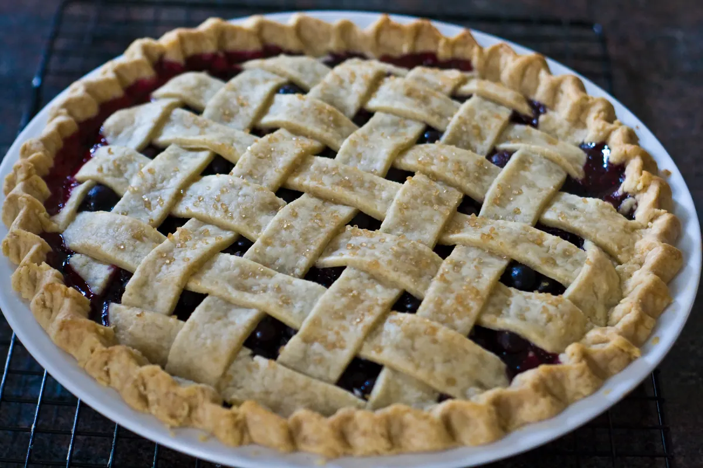
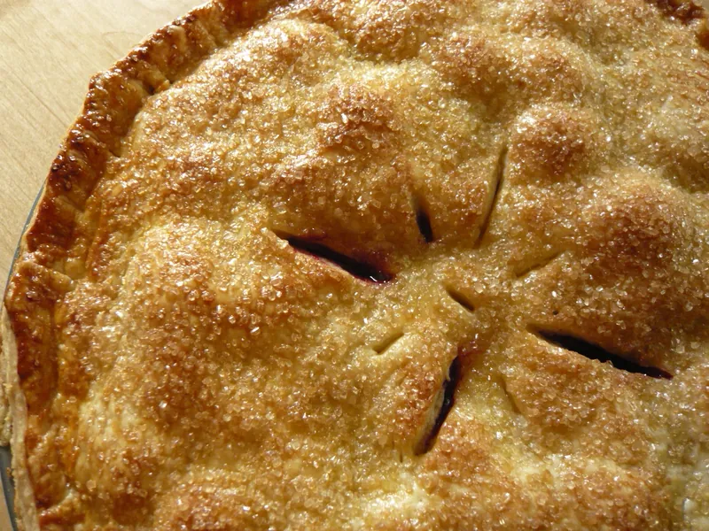

Summer · baking · serves 8
Lattice-Top Blueberry Pie
Six cups of berries, an all-butter crust and a filling thickened with tapioca so it sets soft rather than solid. The lattice looks harder than it is — it is twenty minutes and a ruler's worth of patience.

The two things that go wrong
Blueberry pie fails in exactly two ways and they are both solvable. The first is a wet pie: you cut into it and a tide of purple juice runs out across the plate, leaving a sunken lid over a soggy base. The second is the overcorrection — so much cornstarch that the filling sets into a sliceable block with the texture of jam, which holds its shape beautifully and tastes of nothing much.
The fix for both is tapioca rather than cornstarch, and patience. Instant tapioca sets a fruit filling softly and clearly; it holds the juice without turning it to gel, and it stays stable as the pie cools where cornstarch can weep. And the pie must cool completely — three hours, no shortcuts — because the set happens during cooling, not during baking. A pie cut warm will always run, no matter what you thickened it with.
The other thing worth knowing before you start is that the crust and the filling want opposite things. The crust wants to be cold right up until it hits the oven; the filling wants to sit with the sugar and the tapioca for fifteen minutes so the starch hydrates. So the order below has you make and chill the dough first, then mix the filling while the shaped shell is in the refrigerator. That is not fussiness, it is just the only sequence that gives both of them what they need.
About the berries
Fresh berries in July and August, when they are a dollar a pint and taste of something. Out of season, frozen berries make a better pie than poor fresh ones — but they are not a straight swap, and the substitutions section below says exactly what changes. Do not wash fresh berries until just before you use them, and do not wash frozen ones at all.
Sort them. Five minutes tipping them onto a tray and pushing out the soft ones, the green ones and the odd stem is the difference between a clean flavour and a faintly grassy one. One or two underripe berries in six cups will not be noticed; a dozen will.
Lattice-Top Blueberry Pie
Equipment
- A 9-inch pie plate, glass or metal, not disposable foil
- A rolling pin and a work surface you can flour
- A digital scale — for the flour especially
- A pastry wheel or a long knife and a ruler for the lattice
- A rimmed baking sheet to catch drips
Ingredients
All-butter crust, makes a double crust
- 12.5 ozall-purpose flour (about 2 1/2 cups, spooned)
- 1 Tbspgranulated sugar
- 1 tspfine sea salt
- 8 ozunsalted butter (2 sticks), very cold, cut into 1/2-inch cubes
- 6–8 Tbspice water
Filling
- 6 cupsblueberries, about 2 lb, picked over
- 3/4 cupgranulated sugar (5.3 oz)
- 5 Tbspinstant tapioca, ground fine in a spice grinder or blender
- 2 Tbsplemon juice, fresh
- 1 tspfinely grated lemon zest
- 1/4 tspfine sea salt
- 1/4 tspground cinnamon, optional
To finish
- 1egg, beaten with 1 Tbsp water
- 1 Tbspcoarse or demerara sugar
Method
- Make the dough. Whisk the flour, sugar and salt in a wide bowl. Add the cold butter and toss it in the flour until every cube is coated. Flatten each cube between finger and thumb into a rough disc. Keep going until the mixture looks like a bowl of oat flakes with some almond-sized pieces still in it. Those larger pieces become the flaky layers; do not work them away.
- Sprinkle over 6 tablespoons of ice water and turn the mixture with a fork until it starts to clump. Squeeze a handful: if it holds, it is ready. If it crumbles, add water a tablespoon at a time. The dough should look shaggy and slightly dry, not smooth.
- Tip it out, divide in two with one piece a little larger, press each into a flat disc, wrap, and refrigerate for at least 1 hour. Overnight is better.
- Line the plate. Roll the larger disc on a floured surface to a 13-inch round, turning it a quarter turn after every few passes so it does not stick. Fold it loosely over the pin and lift it into the plate — never stretch it. Ease it into the corner with a knuckle so it sits without tension. Leave the overhang. Refrigerate.
- Roll the second disc to a 12-inch round and cut it into ten strips about 1 inch wide. Slide the strips on a sheet of parchment onto a tray and refrigerate for 20 minutes. Cold strips are far easier to weave than warm ones.
- Mix the filling. Grind the tapioca to a powder. Toss the berries with the sugar, ground tapioca, lemon juice, zest, salt and cinnamon. Leave it to stand for 15 minutes, stirring once. The sugar will draw out juice and the tapioca will begin to take it up.
- Heat the oven to 425°F with a rack in the lower third and the rimmed baking sheet on it to heat up.
- Fill and lattice. Tip the filling and all its juice into the chilled shell and level it. Lay five strips across the pie, evenly spaced. Fold back every other strip to the halfway point, lay a sixth strip across the middle at right angles, and unfold. Fold back the alternate strips, lay the next crosswise strip, unfold. Repeat outward in both directions until all ten are used.
- Trim the strips and the overhang to about 3/4 inch, fold the lot under itself into a neat rim, and crimp. Brush the lattice and the rim with egg wash and scatter the coarse sugar over.
- Bake. Put the pie on the hot baking sheet. Bake at 425°F for 20 minutes, then lower the oven to 375°F and bake a further 35 to 45 minutes. It is done when the crust is deep gold all over — not pale anywhere — and the juice is bubbling thickly and slowly in the middle of the pie, not just at the edge. Slow fat bubbles mean the starch has activated. If the rim darkens early, cover it with a ring of foil.
- Cool completely on a wire rack, at least 3 hours. This is part of the recipe, not an afterthought. The filling sets as it cools. Cut it warm and it will run.
Make it easier
- Skip the weave. Lay five strips one way and five the other straight on top without interlacing. From two feet away nobody can tell, and it bakes identically.
- Grind the tapioca. Whole instant tapioca leaves small firm beads through the filling. Thirty seconds in a spice grinder solves it. No grinder? Use 4 tablespoons of cornstarch instead and accept a slightly cloudier set.
- If the dough fights you, it is warm. Put the whole thing, rolling pin included, in the refrigerator for 15 minutes and start again. Pastry is not a test of character.
- Make the dough days ahead. It keeps 3 days wrapped in the refrigerator and 3 months in the freezer, thawed overnight in the refrigerator.

Storage and reheating
Keep the pie at room temperature, loosely covered with a tea towel, for 2 days. After that, refrigerate for up to 4 days. Do not seal a fruit pie in an airtight box: it steams itself and the crust goes limp within hours. A baked fruit pie does not freeze well for the same reason.
To bring a refrigerated slice back, put it on a tray in a 350°F oven for 12 to 15 minutes. It will not be as crisp as the first day but it will be much better than cold. A microwave makes the pastry soft and leathery; it is the one method to avoid.
Making it ahead
The dough can be made three days ahead, or frozen for three months. The shell can be lined, latticed-strips-and-all, and kept covered in the refrigerator overnight. The filling should not be mixed more than about half an hour ahead, because the tapioca keeps absorbing and the berries keep giving up juice, and you end up with a thick sludge that bakes densely.
Substitutions
Frozen blueberries. This works but it is not a straight swap. Use them frozen, not thawed, add 2 extra tablespoons of ground tapioca, skip the 15-minute standing time, and add 12 to 15 minutes to the bake. Thawing them first floods the pie.
Cornstarch for tapioca. Use 4 tablespoons. The set is firmer and slightly cloudy, which matters under a lattice where you can see it and not at all in a crumble.
Mixed berries. Up to a third of the six cups can be blackberries or raspberries with no other change. Strawberries release far more water; keep them under a quarter and add an extra tablespoon of tapioca.
Shortening or lard in the crust. Replacing half the butter with either gives a more tender, less flaky crust that is easier to roll. Use a tablespoon less water, because neither contains any.
Less sugar. You can take the filling down to 1/2 cup if your berries are sweet. Below that the filling gets loose, because sugar is doing structural work here as well as tasting of itself.
If something goes wrong
The bottom is soggy. The pie went into a cold oven position or came out too early. Baking on a preheated sheet in the lower third fixes it, and so does being braver about colour — most home pies are pulled ten minutes too soon.
The filling ran out. Either it was cut before it was cold, or the juice never bubbled thickly in the centre. Both are time problems, not ingredient problems.
The shell shrank down the sides. The dough was stretched to fit rather than lifted in, or it did not rest after shaping. There is more on this in Kitchen Notes.
The lattice tore while weaving. Too warm. Chill the strips for fifteen minutes and they become cooperative.
Allergens
As written this recipe contains wheat (gluten), dairy (butter) and egg (the wash). The egg wash can be left off or replaced with cream, which keeps it dairy but removes the egg.
This line describes the recipe, not your shopping. Formulations change without notice, so check the label on every package you actually buy. If you are not certain about a product, do not use it.
Nutrition estimate
| Item | Estimate |
|---|---|
| Calories | 486 kcal |
| Total fat | 24 g |
| Saturated fat | 15 g |
| Carbohydrate | 65 g |
| Sugars | 29 g |
| Fibre | 3 g |
| Protein | 5 g |
| Sodium | 310 mg |
Nutrition values are an estimate calculated from typical ingredient data and will vary with brands, substitutions and portion size. They are not dietary advice.
Next
- Apple Crumble with an Oat Topping — the same fruit logic with none of the pastry.
- Kitchen Notes — why pastry shrinks and how long things keep.
- All the summer recipes